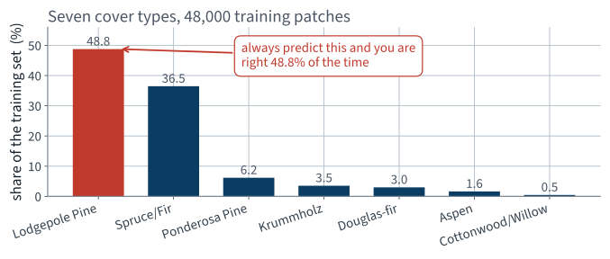
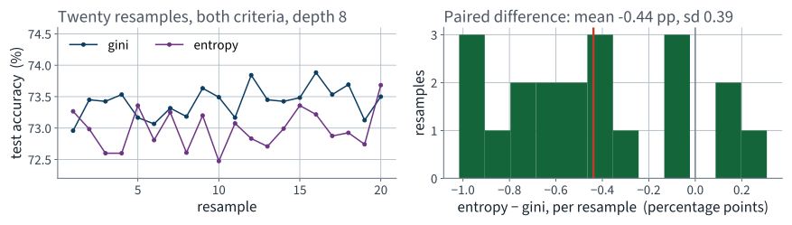
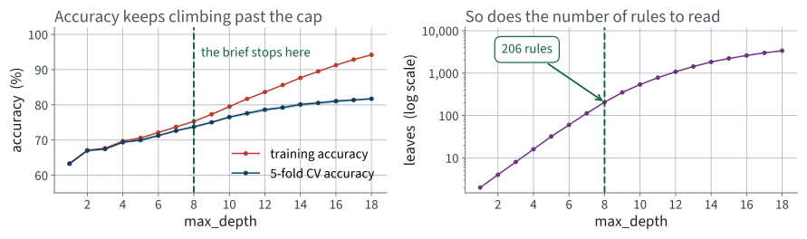
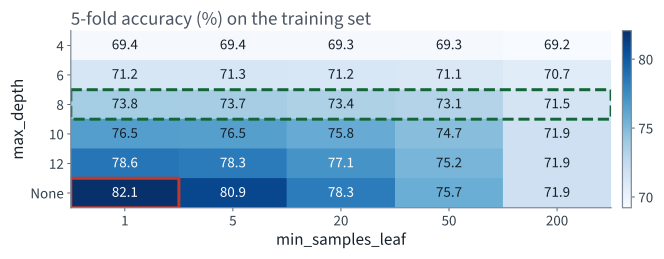
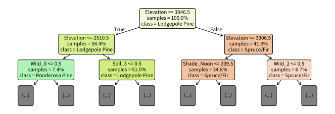
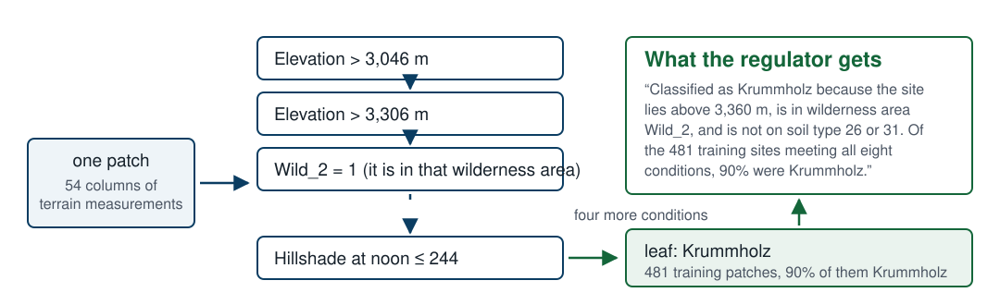
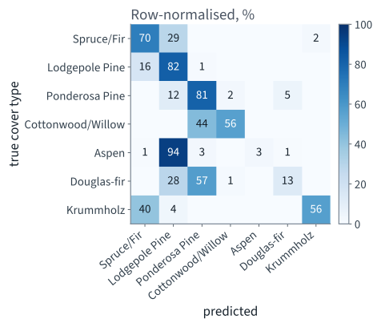

Forest CoverType · seven species from a contour map
Lecture 6 Géron Ch. 5
Applications of Machine Learning
BSc Mathematics of Artificial Intelligence · Third year
The previous lecture took the error of a fitted model apart:
Pipeline passed to cross-validation. Nothing derived from the
test set in the training path. Fixed seeds. Report the fold scores, not only
the mean.
Every model so far predicted with a weighted sum, $\boldsymbol\theta^{\intercal}\mathbf{x}$. Today’s is not a weighted sum at all, but a sequence of yes/no questions — and the sequence is the explanation.
An agency that manages a national forest has to publish a map of forest cover type — which species dominates each 30 by 30 metre patch of ground — over an area far too large to survey on foot.
No satellite imagery, no remote sensing. Numbers a surveyor could in principle read off a contour map.
The map is not an internal artefact. It goes into the public record, and it is used to decide:
A landowner who is refused a permit is entitled to ask why. So is a court.
Note the word individual. Not “which variables matter in general”. Not “the model is 88% accurate”. This patch, this answer, this reason.
Requirements of this shape are ordinary in regulated work — credit, insurance, medicine, planning. They are worth meeting deliberately rather than discovering late.
“Human-readable” is not a testable condition. Before writing any code, negotiate it into one. We asked, and this is what came back:
| Requirement | Testable form |
|---|---|
| Readable by a non-specialist | stated as conditions on the measured columns, not on transformed ones |
| Short enough to check | at most 8 conditions per prediction |
| Auditable | the same patch gives the same justification, and the rule can be applied by hand |
Eight is the number the agency chose. It is arbitrary — and it is now a hyperparameter fixed by the brief rather than by cross-validation. That is unusual and worth noticing.
The Forest CoverType survey: 581,012 patches of 30 by 30 metres in the Roosevelt National Forest, Colorado, each with 54 cartographic measurements and a surveyed cover type.
| Columns | How many | Kind |
|---|---|---|
| Elevation, aspect, slope, hillshade, distances | 10 | quantitative |
| Wilderness area | 4 | already one-hot |
| Soil type | 40 | already one-hot |
No missing values, no text columns, nothing to impute. This one arrives clean — so the difficulty is entirely elsewhere.
Measured on one run of this lecture’s notebook; hardware, library versions and random seeds can make a re-run differ slightly.
We work on a stratified subsample of 60,000 of the 581,012 patches, split 48,000 / 12,000 — a compromise for speed, and a reported one. The rule has not changed, and neither has the reason.
assert len(X_train) == 48_000 and len(X_test) == 12_000
assert set(X_train.index).isdisjoint(X_test.index)
assert X_train.isna().sum().sum() == 0
Three assertions, three seconds, and the shape of the rest of this lecture is now guaranteed rather than hoped for.
Stratifying on the label matters here: with one class at 0.5% of the data, an unstratified split can hand a fold almost none of it.
Measured on one run of this lecture’s notebook; hardware, library versions and random seeds can make a re-run differ slightly.

Two species are 85% of the ground. Whatever we build has to be judged against the model that always says “Lodgepole Pine”.
Seven classes, no natural ordering, no asymmetric cost stated by the agency. The default is accuracy — reported, as always, beside the number that says what nothing scores.
from sklearn.dummy import DummyClassifier
dummy = DummyClassifier(strategy="most_frequent").fit(X_train, y_train)
print(f"{dummy.score(X_test, y_test):.1%}") # 48.8%
| Model | Test accuracy | Species it can ever predict |
|---|---|---|
| Always “Lodgepole Pine” | 48.8% | 1 of 7 |
Anything below 48.8% is worse than a constant. The distance above it is the only part you actually earned.
Measured on one run of this lecture’s notebook; hardware, library versions and random seeds can make a re-run differ slightly.
You called DecisionTreeClassifier().fit().
It chose one feature and one threshold at every node. Chose them to minimise what?
criterion="gini" and
criterion="entropy". Deciding whether that switch is worth
touching requires knowing what the two quantities are and how they differ,
and the answer also explains why a tree ignores a rare class.
A node holds some training instances. Write $p_k$ for the fraction of them in class $k$, for $k = 1, \dots, K$ ($K = 7$ here), and $\mathbf{p} = (p_1, \dots, p_K)$ for the node’s class distribution. A node is pure when some $p_k = 1$.
Gini impurity — Scikit-Learn’s default
The same class distribution $\mathbf{p}$, scored a different way, with $0 \log_2 0 = 0$ by the limit $p\log p \to 0$:
Shannon entropy, in bits
A node of $m$ instances is split by a question $x_k \le t_k$, which sends $m_{\text{L}}$ instances left and $m_{\text{R}}$ right. Its cost is the impurity $I$ — Gini or entropy — of the two children, weighted by their size:
searched over every feature $k$ and every threshold $t_k$
Equivalently, maximise the impurity decrease $\Delta I = I_{\text{parent}} - J(k,t_k)$. The parent term is the same for every candidate at this node, so the two are the same search.
AnimationBoth are zero at a pure node and grow as the classes mix, so they usually rank candidate splits the same way. How far can they part? On a two-class node with $p_1 = p$,
$H$ has maximum 1 and $G$ has maximum $1/2$, so compare $H/2$ with $G$. Both are then $0$ at $p\in\{0,1\}$ and $1/2$ at $p = 1/2$: they agree at three points, and the largest gap between them anywhere else is 0.055, at $p \approx 0.10$ and again at $p \approx 0.90$.
So two candidates whose weighted impurities differ by more than 0.055 are ranked identically by both criteria. Disagreement needs a close call.

Both criteria on the same twenty 80% resamples, at depth 8. Gini is above entropy on 17 of them, by under half a point: real, and not worth tuning.
A binary tree. Each internal node asks one question about one feature; each leaf carries a prediction.
| Operation | Cost | Why |
|---|---|---|
| Predict one instance | $O(\log_2 m)$ | one root-to-leaf path of a roughly balanced tree |
| Train | $O(n \times m \log_2 m)$ | at every node, sort and scan all $n$ features |
Prediction does not depend on $n$, which is why reading a prediction costs the same as making it. That is what makes the justification free.
from sklearn.tree import DecisionTreeClassifier
free = DecisionTreeClassifier(random_state=42) # no depth limit
free.fit(X_train, y_train)
print(f"depth {free.get_depth()}")
print(f"leaves {free.get_n_leaves():,}")
print(f"train accuracy {free.score(X_train, y_train):.1%}")
depth 33
leaves 5,699
train accuracy 100.0%
100.0%. A tree with 5,699 leaves and 48,000 training patches has eight patches per leaf on average. Of course it is perfect on its own data.
Measured on one run of this lecture’s notebook; hardware, library versions and random seeds can make a re-run differ slightly.
| Unconstrained tree | Accuracy |
|---|---|
| On the training set | 100.0% |
| 5-fold cross-validated, on the training set | 82.1% |
| On the test set (looked at once, at the end) | 82.6% |
82% is a real number and it is far above the 48.8% baseline, so the tree family works on this problem.
But count what a prediction rests on. The tree is 33 levels deep, and the requirement allows eight conditions.
Measured on one run of this lecture’s notebook; hardware, library versions and random seeds can make a re-run differ slightly.
from sklearn.model_selection import StratifiedKFold, cross_validate
cv = StratifiedKFold(n_splits=5, shuffle=True, random_state=42)
for d in range(1, 19):
clf = DecisionTreeClassifier(max_depth=d, random_state=42)
scores = cross_validate(clf, X_train, y_train, cv=cv,
return_train_score=True, n_jobs=-1)
Cross-validated, on the training set. The test set is not consulted to choose anything — that rule survives from Lecture 2 and will survive to the last lecture.

Cross-validated accuracy is still climbing at depth 18: 8.0 points above depth 8, the price of the brief. Every one of them is bought with more rules than anyone will read.
A path of depth 8 applies at most eight conditions, so the
brief fixes max_depth=8 and cross-validation gets no vote on it.
What is left is min_samples_leaf: a split that would leave a
child with fewer training instances than this is rejected.
from sklearn.model_selection import GridSearchCV
grid = {"max_depth": [4, 6, 8, 10, 12, None],
"min_samples_leaf": [1, 5, 20, 50, 200]}
search = GridSearchCV(DecisionTreeClassifier(random_state=42), grid,
cv=cv, n_jobs=-1).fit(X_train, y_train)
# 30 combinations x 5 folds = 150 fits
We search the whole grid anyway — including the depths we are not allowed to use — because the rows we cannot pick are exactly what tells the agency what its requirement costs.

The red cell is the best model. The green row is the set of models we are allowed to ship.
min_samples_leaf=20The model states its justification as “91% of the 463
training patches in this leaf”. At min_samples_leaf=1 that
becomes “100% of the 1” — a single surveyed patch
wearing the grammar of evidence. The brief requires a justification that can be
audited; that is not one.
| leaf | CV accuracy | |
|---|---|---|
| what cross-validation prefers | 1 | 73.75% |
| what the brief requires | 20 | 73.35% |
| price of auditability | — | 0.40 points |
As with depth: when the brief constrains the model, the grid does not get a vote. And that 0.40 goes to the agency — a constraint that overrules a measurement has to show the measurement it overruled.
Measured on one run of this lecture’s notebook; hardware, library versions and random seeds can make a re-run differ slightly.
tree = DecisionTreeClassifier(max_depth=8, min_samples_leaf=20,
random_state=42).fit(X_train, y_train)
| Unconstrained | Depth 8, leaf 20 | |
|---|---|---|
| Leaves | 5,699 | 163 |
| Columns consulted, of 54 | 47 | 24 |
| Mean conditions per justification | 17.88 | 7.97 |
| Smallest leaf | 1 | 20 |
| Training accuracy | 100.0% | 74.4% |
| Cross-validated accuracy | 82.1% | 73.4% |
Measured on one run of this lecture’s notebook; hardware, library versions and random seeds can make a re-run differ slightly.

The first three questions the model asks about any patch in Colorado. Two of them are about elevation.
>>> print(export_text(tree, feature_names=names, max_depth=2, decimals=0))
|--- Elevation <= 3046
| |--- Elevation <= 2510
| | |--- Wild_0 <= 0
| | | |--- truncated branch of depth 6
| | |--- Wild_0 > 0
| | | |--- truncated branch of depth 2
| |--- Elevation > 2510
| | |--- Soil_3 <= 0
| | | |--- truncated branch of depth 6
export_text needs no plotting library at all, and
it is what you paste into an email. For a model whose selling point is that a
person can read it, that matters.
| Field | Meaning |
|---|---|
Elevation <= 3046.5 | the question; go left if true |
gini = 0.65 | the Gini impurity $G$ at this node — 0 would be a single species |
samples = 48,000 | training patches that reached this node |
value = [0.36, 0.49, ...] | their class distribution $\mathbf{p}$, seven entries |
class = Lodgepole Pine | the majority — what a leaf here would predict |
The threshold is 3,046.5 rather than 3,046 because CART puts the split midway between two adjacent observed values. Nothing in the data sits at 3,046.5 metres.
Trees need no feature scaling at all: $x_k \le t_k$ is invariant under any strictly increasing transformation of $x_k$, so standardising a column changes its thresholds and nothing else.
Measured on one run of this lecture’s notebook; hardware, library versions and random seeds can make a re-run differ slightly.
def justify(tree, x, names):
t, node, out = tree.tree_, 0, []
while t.children_left[node] != -1:
f, thr = t.feature[node], t.threshold[node]
left = x[f] <= thr
out.append((names[f], "<=" if left else ">", thr, x[f]))
node = t.children_left[node] if left else t.children_right[node]
return out, node
Nine lines, no library beyond what is already imported. The
entire justification mechanism is tree_.children_left,
tree_.feature and tree_.threshold.

The path is the justification. No extra machinery, no approximation, no second model explaining the first.
91% of the 463 training patches in that leaf were Krummholz.
predict_proba returns exactly those leaf proportions —
so a tree’s “probabilities” are piecewise constant and
identical for every patch reaching the same leafMeasured on one run of this lecture’s notebook; hardware, library versions and random seeds can make a re-run differ slightly.

Each row: where one true species’ test patches went. Aspen’s went almost entirely to Lodgepole Pine.
| Cover type | Share of the data | Recall |
|---|---|---|
| Lodgepole Pine | 48.8% | 82.0% |
| Ponderosa Pine | 6.2% | 80.8% |
| Spruce/Fir | 36.5% | 69.6% |
| Krummholz | 3.5% | 56.4% |
| Cottonwood/Willow | 0.5% | 56.1% |
| Douglas-fir | 3.0% | 12.8% |
| Aspen | 1.6% | 2.6% |
Overall test accuracy is 73.0%. The model finds fewer than 3 Aspen patches in every hundred, and in that one number it costs 1.6 points and is invisible.
Measured on one run of this lecture’s notebook; hardware, library versions and random seeds can make a re-run differ slightly.
The cause is $J$ itself: it weights each child by how many
instances it holds, so a split that isolates a class at 1.6% of a node barely
moves it. class_weight="balanced" multiplies each
instance’s contribution to $J$ by the inverse of its class frequency, so
every class carries the same total weight.
A different model answering a different question. Which one the agency wants is not a machine learning decision — but quoting either number without the other is an argument rather than a measurement.
X_train and X_testmax_depth from 8 to 12 in the cell that ships the tree,
and re-run the trace. The justification grows to up to twelve conditions
where the brief allows eight; the depth sweep says what that buys in
accuracy, and that pair is the trade.
Measured on one run of this lecture’s notebook; hardware, library versions and random seeds can make a re-run differ slightly.
| Topic | Chapter |
|---|---|
| Training, visualising and reading a decision tree | 5 |
| Gini impurity, entropy, and choosing between them | 5 |
| The CART cost function | 5 |
| Computational complexity of trees | 5 |
| Regularisation hyperparameters | 5 |
| Multiclass classification, confusion matrices, recall | 3 |
| Cross-validation and grid search | 2 |
Not presented — for afterwards
five, in the style of the written paper
Solutions on Lecture 7’s deck.
Measured on one run of this lecture’s notebook; hardware, library versions and random seeds can make a re-run differ slightly.
min_samples_leaf=1 (73.75% cross-validated) to 20 (73.35%). Give the reason to ship 20 anyway, and say what must be reported with it. [4]Solutions on Lecture 7’s deck.
Measured on one run of this lecture’s notebook; hardware, library versions and random seeds can make a re-run differ slightly.
The five set at the end of Lecture 5
not part of this lecture
1. Write the bias–variance decomposition of the expected squared error, and name the one term no model can…
$\mathbb{E}[(y-\hat f)^2] = \text{bias}^2 + \text{variance} + \operatorname{Var}(y \mid x)$; the noise $\operatorname{Var}(y \mid x)$ cannot be reduced.
2. A learning curve shows training and validation error both high and close together, and flat as data is added.…
High bias. More data would not help.
3. Ridge adds $\alpha I$ to $X^{\mathsf T}X$ before inverting. Give the numerical consequence, in terms of the…
It raises every eigenvalue by $\alpha$, so the condition number falls and the inverse is stable.
4. Lasso sets some weights to exactly zero; ridge shrinks every weight but sets none to zero. Explain the…
Ridge’s push towards zero fades as the weight approaches zero; lasso’s keeps its full size right up to zero.
5. You tune $\alpha$ over a grid of seventeen values by scoring each on the test set, then report the best test…
The best-of-grid score is optimistic: it is a minimum over seventeen noisy estimates on the same rows used to choose.
Lecture 7 · Géron Ch. 6
The variance of an average of correlated predictors — one result
that explains bagging, feature subsampling and random thresholds
Out-of-bag evaluation, random forests, feature importance, boosting and
stacking
And what averaging costs: the justification you spent today earning
Run the Lecture 6 notebook first